8 Forced Vibrations of Linear Multi Degree of Freedom Systems
8.1 Modal Analysis for Forced Vibration Response
8.1.1 General Flow
Now that we have established the basic principles of modal analysis while discussing free vibrations, we will outline the procedure for its application to forced vibrations. Consider an MDOF system, with \(n\) degrees of freedom, subject to time dependent excitations acting along various generalized coordinates and collected in a column matrix \(\ldtvec\), so that the equations of motion for the system are given by: \[ \mmat \ddgcvec (t) + \cmat \dgcvec (t) + \kmat \gcvec (t) =\ldvec (t) \qquad(8.1)\] Assume that the eigenvalue problem is solved so that mode shapes \(\eigveci{i}\) and frequencies \(\freq_i\) are known. For a classically damped system, transformation from physical coordinates \(\gcvec\) to modal coordinates \(\modcorvec\) via \[ \gcvec (t) = \modmat \modcorvec (t) = \sum_{i} \eigveci{i} \modcor_i (t) \qquad(8.2)\] leads to \[ \modmat^T \mmat \modmat \ddmodcorvec + \modmat^T \cmat \modmat \dmodcorvec + \modmat^T \kmat \modmat \modcorvec = \modmat^T \ldvec (t) \qquad(8.3)\] which may be written as \[ \modmmat \ddmodcorvec (t) + \modcmat \dmodcorvec (t) + \modkmat \modcorvec (t) = \modldvec (t) \qquad(8.4)\] where we have defined the modal load vector \(\modldvec\) as \(\modldvec (t) \equiv \modmat^T \ldvec (t)\). Equation 8.4 is a collection of \(n\)-many uncoupled equations, each of the form \[ \modm_i \ddmodcor_i (t) + \modc_i \dmodcor_i (t) + \modk_i \modcor_i (t) = \modextforce_i (t) \quad \text{for } i=1,2,\ldots n \qquad(8.5)\] where \[ \modm_i = \teigveci{i} \mmat \eigveci{i}, \; \modc_i = \teigveci{i} \cmat \eigveci{i}, \; \modk_i = \teigveci{i} \kmat \eigveci{i}, \; \modextforce_i (t) = \teigveci{i} \ldvec (t) \] Dividing by modal mass \(\modm_i\) leads to \[ \ddmodcor_i (t) + 2\zeta_i \freq_i \dmodcor_i (t) + \freq_i^2 \modcor_i (t) =\frac{\modextforce_i (t)}{\modm_i} \quad \text{for } i=1,2,\ldots n \qquad(8.6)\]
Equation 8.6 is the equation for a viscously damped SDOF system. The solution of such equations have been discussed in detail in Chapter 3 and Chapter 4. Once these equations are solved, we can combine the contributions from different modes to compute the response in physical coordinates via \[ \gcvec (t) = \sum_{i=1}^{n} {\modgcvec{i} (t)} = \sum_{i=1}^{n} {\eigveci{i} \modcor_i (t) } \qquad(8.7)\] where \[ \modgcvec{i} (t) = \eigveci{i} \modcor_i (t) \qquad(8.8)\] is the contribution of the \(i\)-th mode to the generalized displacements. Such a dissolution is employed in analyzing the particular contributions of modes to many response quantities. We will use the terminology modal [response quantity] to refer to such contributions; for example, we will call the vector \(\modgcvec{i}\) in Equation 8.8 the modal displacements. We shall eventually refer other quantities such as modal base shear, modal interstory drift, modal equivalent static loads, etc.
In summary, the procedure to solve MDOF forced vibration problems with modal analysis can be summarized as follows:
In principle, for an \(n\)-DOF system, it may not be necessary to include all \(n\) modal responses while calculating a response quantity since some (or even many) of the modal contributions may be negligible and therefore not worthwhile to spend resources on, especially in solving the eigenvalue problem and the response calculations in modal coordinates. The answer to the question of how many and which modes to include, however, is not trivial since the acceptable subset to use will depend on both the spatial and temporal distributions of the inputs. We will revisit this issue in more detail while discussing earthquake response analysis.
8.1.2 Derived Response Quantities
When modal analysis is used to analyze the response of a system, any response quantity we may seek to find will depend on the modal coordinate responses. We have seen an example of this in Equation 8.7 where the displacement responses in physical coordinates were expressed as a superposition of the modal displacements which in turn were functions of modal coordinates \(\modcor_i\). In this section we will introduce a few derived quantities which are deemed important for design and control purposes, and try to evaluate the modal conributions to each.
Consider, as an example, a multi-story shear building. We choose to analyze this model because certain response quantities are relatively easily visualized on this model. The structure is shown in Figure 8.1 (a), and we assume that it is subjected to a unidirectional ground motion given by \(\gdis (t)\). The response quantities we are about to introduce are frequently employed in earthquake related analyses but the formulations could be generalized to any external excitation with proper modifications.
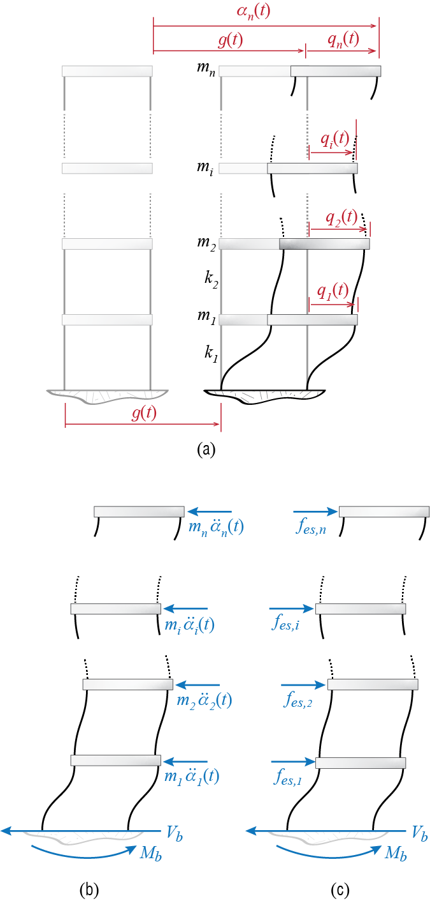
One of the design parameters often referred to in structural codes is the base shear, denoted here by \(\baseshear\). This is the total shear force that must be transmitted to the fixed base by the columns attached to the foundation. It may be calculated via the cumulative d’Alembert forces or the equivalent static loads as follows: At any time during its motion, the free body diagram of the whole shear building, including the d’Alembert forces, will be like the one shown in Figure 8.1 (b) (the free body diagram also includes the overturning moment \(\overturn\) which will be subsequently introduced). Equilibrium demands that the net horizontal force shall be zero so that \[ \baseshear (t) = - \sum_{i=1}^{n} m_i \aacc_i (t) = - \onecol^T \mmat \aaccvec (t) \qquad(8.9)\] Alternatively, we define equivalent static loads \[ \estatvec (t) = \colmat{\estati{1} (t) \\ \estati{2} (t)\\ \vdots \\ \estati{n}(t)} = \kmat \gcvec (t) \qquad(8.10)\] as the set of external loads that should be appplied to a fixed base structure to induce the displecement pattern \(\gcvec (t)\) at time \(t\). The structure with these forces is shown in Figure 8.1 (c). The reasoning is that since \(\gcvec (t)\) is imposed, the internal force distribution related to deformation (stiffness) elements must be compatible with that which would occur under external loads \(\estatvec = \kmat \gcvec\); this in turn implies that a static analysis under applied loads \(\estatvec\) could be used to solve for internal forces. Under the action of \(\estatvec\) shown in Figure 8.1 (c), the base shear will be simply equal to the sum of these forces so that it is given by \[ \baseshear (t) = \onecol^T \kmat \gcvec (t) = \onecol^T \estatvec (t) \qquad(8.11)\] which may be shown to be equal to \(\baseshear = k_1 \gc_1\). It is important to note that there are no such external forces that actually act on the system; the equivalent static force \(\estatvec\) is a conceptual device that simply helps us in calculations and allows us to think about a problem as we are accustomed to do in our experience with static analyses. The expression in Equation 8.10 is the same as that with which we have previously defined \(\stff\) but these two sets of forces have a subtle conceptual difference and we feel that difference should be reflected in the symbolism. In any case we should note that if the system is undamped, then equations Equation 8.9 and Equation 8.11 actually yield the same results since by the equation of motion for a shear building subject to unidirectional ground motion we have \[ \mmat \aaccvec (t) + \kmat \gcvec (t) = \zerocol \quad \rightarrow \quad \kmat \gcvec (t) = - \mmat \aaccvec (t) \] In the presence of damping, a portion of d’Alembert forces would be balanced with damping forces so that the values obtained from the two expressions would differ; for small values of damping, however, the difference may not have a significant impact on design. Due to its direct link with methods of static analysis, the equivalent static force formulation is often preferred.
How do we calculate the base shear with modal analysis? If we replace the generalized displacement vector in Equation 8.10 with its modal expansion given in Equation 8.2 we get \[ \begin{array}{rcl} \estatvec (t) & \!\!\! = & \!\!\! \kmat \gcvec (t) = \kmat \left(\sum_i \eigveci{i} \modcor_i (t) \right) \\ & \!\!\! = & \!\!\! \kmat \eigveci{1} \modcor_1 (t) + \kmat \eigveci{2} \modcor_2 (t) + \cdots + \kmat \eigveci{n} \modcor_n (t) \\ & \!\!\! = & \!\!\! \modestatvec{1} (t) + \modestatvec{2} (t) + \cdots + \modestatvec{n} (t) \end{array} \qquad(8.12)\] where \[ \modestatvec{i} (t) = \kmat \eigveci{i} \modcor_i (t) \qquad(8.13)\] is the modal equivalent static force for the \(i\)-th mode, i.e. the contribution of the \(i\)-th mode to the equivalent static force at time \(t\). Consequently, the base shear may be written in the form \[ \begin{array}{rcl} \baseshear (t) & \!\!\! = & \!\!\! \onecol^T \estatvec (t) = \onecol^T\modestatvec{1} (t) + \onecol^T\modestatvec{2} (t) + \cdots + \onecol^T \modestatvec{n} (t) \\ & \!\!\! = & \!\!\! \modbaseshear{1} (t) + \modbaseshear{2} (t) + \cdots + \modbaseshear{n} (t) \end{array} \qquad(8.14)\] where \[ \modbaseshear{i} (t) = \onecol^T\modestatvec{i} (t) = \onecol^T\kmat \eigveci{i} \modcor_i (t) \qquad(8.15)\] is the modal base shear for the \(i\)-th mode, i.e. the contribution of the \(i\)-th mode to the base shear.
Another design variable commonly referred to is the overturning moment \(\overturn\), which is the total moment generated during at the base of the structure. We may calculate this quantity as follows: assume that the \(i\)-th floor is located at a height of \(h_i\) measured from the base. Condsidering the equivalent static loads, the overturning moment may be derived from moment equilibrium as \[ \overturn (t) = h_1 \estati{1} + h_2 \estati{2} + \cdots + h_n \estati{n} = \nvec{h}^T \estatvec (t) \] where \(\nvec{h} = \left\{h_1 \;\;\; h_2 \;\;\; \cdots \;\;\; h_n\right\}^T\) is a column matrix that contains the heights, and it is generally referred to as the height vector. Considering modal expansion of the equivalent static loads given in Equation 8.12 we get \[ \begin{array}{rcl} \overturn (t) & \!\!\! = & \!\!\! \nvec{h}^T \estatvec (t) = \nvec{h}^T\modestatvec{1} (t) + \nvec{h}^T\modestatvec{2} (t) + \cdots + \nvec{h}^T \modestatvec{n} (t) \\ & \!\!\! = & \!\!\! \modoverturn{1} (t) + \modoverturn{2} (t) + \cdots + \modoverturn{n} (t) \end{array} \qquad(8.16)\] with \[ \modoverturn{i} (t) = \nvec{h}^T \modestatvec{i} (t) = \nvec{h}^T\kmat \eigveci{i} \modcor_i (t) \qquad(8.17)\] denoting the modal overturning moment for the \(i\)-th mode, i.e. the contribution of the \(i\)-th mode to the overturning moment at time \(t\).
One could contrive many other response quantities that may depend on displacements, deformations, and their time derivatives. The simple fact is that if a system has \(n\) degrees of freedom, then it should be possible to express any of these quantities as some function of at most \(n\)-many generalized coordinates and/or their time derivatives. Whenever modal analyses is possible, it will be convenient to express such response quantities via summation of modal contributions, and it will be possible to isolate and discuss the contribution of a specific mode to a particular response quantity. Such modal expansions of response quantities play important roles in determining how many modes to include in an analysis, or whenever it is not possible to obtain full time histories but estimates of maximum responses are available. We will visit these issues further down the text.
8.1.3 Harmonic Excitations
With the modal analysis procedure described above, we can examine how systems will respond to time varying external forces \(\ldvec (t)\). As in the case of SDOF systems, the excitation may be impulsive, periodic, harmonic or random in nature. The preferred analysis method for each scenario may differ. Most generally, time-stepping based numerical approaches can be used to compute the response for a broad range of excitations. For simple loading scenarios such as a harmonic excitation distributed to nodes, the modal analysis technique allows us to obtain analytical solutions with relative ease. In addition, response of MDOF systems to harmonic excitations gives us a window through which we can observe how concepts such as resonance translate to MDOF systems.
A particularly relevant class of problems involves situations where the whole system is excited with a single frequency harmonic excitation but with excitation amplitudes varying at each node. The equation of motion for this system is given by \[ \mmat \ddgcvec (t) + \cmat \dgcvec (t) + \kmat \gcvec (t) = \ldvec \sinp{\extfreq t - \extphs} \qquad(8.18)\] wherein the load vector is expressed as \(\ldvec (t) = \ldvec \sinp{\extfreq t}\) to separate the time varying harmonic component and time invariant amplitude distribution of the loading. Let’s recall the modal equations for forced excitations, Equation 8.4, where the modal load vector is obtained as \(\modldvec (t)= \modmat^T \ldvec (t)\). For each mode then we have, \[ \modm_i \ddmodcor_i (t)+ \modc_i \dmodcor_i (t)+ \modk_i \modcor_i (t)= \modextforce_i (t) \quad \text{for } i=1,2,\ldots,n \] where, for our harmonic force, \[ \modextforce_i (t)= \eigveci{i}^T \ldvec \sinp{\extfreq t - \extphs} \qquad(8.19)\] so that the equation of motion for the \(i\)-th mode, after dividing through by its modal mass, may be written as \[ \ddmodcor_i (t)+ 2\damp_i \freq_i \dmodcor_i (t)+\freq_i^2 \modcor_i(t)=\frac{\eigveci{i}^T \ldvec}{\modm_i} \sinp{\extfreq t - \extphs} \qquad(8.20)\]
Equation 8.20 is the equation of motion for an SDOF system subjected to harmonic excitation and we have solved this problem before: the solution is given by Equation 3.39, which may be adapted to the modal SDOF equation as \[ \begin{array}{rcl} \modcor_i (t) & \!\!\! = & \!\!\! \frac{\eigveci{i}^T \ldvec}{\freq_i^2 \modm_i} \dynamp_i \expon{-\damp_i \freq_i t} \biggl[\sinp{\extphs + \phs_i} \cos \dfreq_i t + \biggl(\frac{\damp_i \sinp{\extphs + \phs_i}-\ratfreq_i \cosp{\extphs + \phs_i}}{\sqrt{1-\damp_i^2}}\biggr) \sin \dfreq_i t \biggr] \\ & & \quad + \frac{\eigveci{i}^T \ldvec}{\freq_i^2 \modm_i} \dynamp_i\sinp{\extfreq t - \extphs - \phs_i} \end{array} \qquad(8.21)\] where \[ \begin{array}{c} \dfreq_i = \freq_i \sqrt{1-\damp_i^2} \; ; \quad \ratfreq_i = \ratio{\extfreq}{\freq_i} \\ \dynamp_i = \ratio{1}{\sqrt{\left(1 - \ratfreq_i^2 \right)^2 + \left(2 \damp_i \ratfreq_i \right)^2}} \; ; \quad \tan \phs_i = \ratio{ ({2 \damp_i \ratfreq_i})/{\dynamp_i}}{({1-\ratfreq_i^2})/{\dynamp_i}} \end{array} \] Once the response in modal coordinates are evaluated, the response time histories in physical coordinates are obtained via modal superposition, i.e. Equation 8.7.
It is difficult to make sense of what the solution looks like by investigating the equations alone, so let us try to investigate a relatively simple case to gain some physical insight. Consider what the response would be when the system is subjected to a sinusoidal excitation with unit amplitudes, i.e. for the case with \[ \ldvec (t) = \onecol \sinp{\extfreq t} \] As the response will eventually comprise only the steady state solution let us focus solely on that part, so that the response of the \(i\)-th mode will be given by \[ \modcor_i (t) = \frac{\eigveci{i}^T \onecol}{\freq_i^2 \modm_i} \dynamp_i\sinp{\extfreq t - \phs_i} \qquad(8.22)\] and the responses in physical coordinates will be given by \[ \gcvec (t) = \sum_{i=1}^{n} \eigveci{i} \frac{\eigveci{i}^T \onecol}{\freq_i^2 \modm_i} \dynamp_i\sinp{\extfreq t - \phs_i} \] There are two distinct contributions to the amplitude of the modal response. One is the term \[ \frac{\eigveci{i}^T \onecol}{\freq_i^2 \modm_i} \] which is in part associated with the spatial distribution of the excitation and in part by the modal stiffness (i.e. \(\modk_i =\freq_i^2 \modm_i\)). As we get to higher modes the number of sign changes in a mode shape increases, and so it is forseeable that \(\eigveci{i}^T \onecol\) will most likely decrease with increasing mode number. This decrease is also exacerbated with the increase in the value of the frequency as the mode number increases (recall that by convention we order modes in increasing frequency values). The second contribution, however, comes from the dynamic amplification factor \(\dynamp_i\), which is a function of \(\ratfreq_i\) and \(\damp_i\). Whenever the excitation frequency approaches the frequency of a particular mode, the dynamic amplification factor for that mode will increase significantly (theoretically it will asymptotically reach an infinitely large value for an undamped system), and in that case the response will be dominated by that mode. It is the interplay of the spatial and temporal components that eventually determines the dominance of a mode in the response.
EXAMPLE 8 .2
Let’s consider a special case of an undamped 2-DOF system subject to a harmonic excitation on the first mass only. A question we can immediately ask is: how does the presence of the second mass and spring affect the response of the first mass? In other words, imagine an SDOF system with mass \(m\) and stiffness \(k\); could we attach a second mass-spring unit to reduce or altogether suppress the motion of this system, assuming we can adjust \(m_d\) and \(k_d\) as we like? The answer is yes, and in fact this is commonly utilized in engineering practice to dampen out structural vibrations. These systems are broadly called tuned mass damper (TMD) systems, where unlike viscous damping, the vibration amplitudes are reduced by the addition of a well-calibrated mass-spring system.
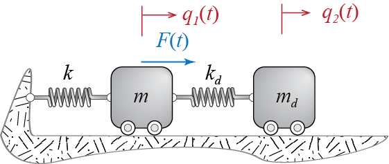
The SDOF system with the mass-spring attachement is shown in Figure 8.2. For the combined system the matrix equation of motion is
\[
\begin{bmatrix}
m & 0\\ 0 & m_d \end{bmatrix} \colmat{\ddgc_1 (t)\\ \ddgc_2 (t)} + \begin{bmatrix} k +k_d & -k_d \\ -k_d & k_d \\ \end{bmatrix} \colmat{\gc_1 (t) \\ \gc_2 (t)}= \colmat{\sforce \\ 0} \sinp {\extfreq t} = \ldvec \sinp{\extfreq t}
\] The two equations are coupled through \(\kmat\). This system is simple enough that we can either solve it by assuming a sinusoidal solution in physical coordinates. The equation of motion for each mode will be \[
\ddmodcor_i (t) +\freq_i^2 \modcor_i (t)=\frac{\eigveci{i}^T \ldvec}{\modm_i} \sinp{\extfreq t}
\] Noting that \[
\eigveci{i}^T \ldvec = \left\{\eigvecs_{1i} \;\;\; \eigvecs_{2i}\right\}\colmat{\sforce \\ 0} = \eigvecs_{1i}\sforce
\] and that \[
\dynamp = \ratio{1}{\sqrt{(1-\ratfreq_i^2)^2}} \; ;\quad \phs = \begin{cases} 0 & \text{if }\ratfreq < 1 \\ \pi & \text{if } \ratfreq > 1\end{cases}
\] the steady state solution for the \(i\)-th mode may be derived via Equation 8.21 to obtain
\[
\modcor_i (t) = \frac{\eigvecs_{1i} \sforce}{\freq_i^2 \modm_{i}} \ratio{1}{1-\ratfreq_i^2} \sinp{\extfreq t}
\] Summing up the contributions of the two modes, the response of the primary mass (the original SDOF system) is obtained as \[
\gc_1 (t) =\left[ \frac{\eigvecs_{11} \eigvecs_{11} }{\modk_1 (1-\ratfreq_1^2)} + \frac{\eigvecs_{12} \eigvecs_{12} }{\modk_2 (1-\ratfreq_2^2)} \right] \sforce \sinp{\extfreq t}
\] where \(\modk_i = \freq_i^2 \modm_i\).
Let’s consider a simple numerical case to illustrate the response. Intuitively, we can imagine that if the second mass-spring complex is tuned to move out of phase with the first during steady-state response, this will result in reduced motion of the first mass. Defining the natural frequency of the isolated SDOF primary system as \(\freq = \sqrt{k/m}\), we will investigate how the response amplitude varies for different values of \(\extfreq/\freq\). Let’s consider a special case where we define a mass ratio of \(m_d / m=0.1\), and use the same ratio to scale the stiffnesses as \(k_d / k = m_d / m = 0.1\)) such that both the primary and the damper system would, if they were considered as two separate SDOF systems, have the same natural frequency. In this case, \[ \mmat = m \begin{bmatrix} 1 & 0 \\ 0 & 0.1 \end{bmatrix}, \quad \kmat = k \begin{bmatrix} 1.1 & -0.1 \\ -0.1 & 0.1 \end{bmatrix} \] so that solving the eigenvalue problem, we get the natural frequencies as \[ \omega_1^2 = 0.7298 \omega^2 \; , \quad \omega_2^2 = 1.3702\omega^2 \] and a set of mode shapes given by \[ \eigveci{1} = \colmat{-0.6495 \\ -2.4043} \; , \quad \eigveci{2} = \colmat{-0.7603 \\ 2.0541} \]
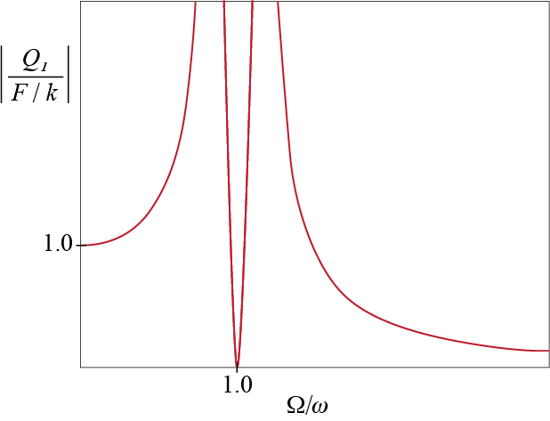
With these mode shapes, the modal mass and stifness values are calculated as \[ \modm_1 = \modm_2 = m \; ; \quad \modk_1 = 0.7298 k, \; \modk_2 = 1.3702 k \] The absolute value of the displacement response amplitude \(Q_1\) of the primary mass, normalized with \(\sforce/k\) (as in static deflection under \(\sforce\)) is then given by \[ \abs{\ratio{Q_1}{\sforce/k}} = \abs{\ratio{0.578}{1-\rho_1^2} + \frac{0.422}{1-\rho_2^2}} \]
The normalized response amplitude plotted in Figure 8.3 shows that the response was completely suppressed at the original natural frequency of the primary system. Even in damped systems, for the critical scenario where the primary system would exhibit resonance, we will have a significantly diminished response, with the displacements being much smaller than static response. In the damped scenarioes, the lowest amplification happens near but not exactly at \(\extfreq/\freq\). It can be shown that by increasing the mass ratio \(m_d / m\), it would be possible to broaden the operational frequency range (e.g. the range where response is less than static equivalent) and further reduce the resonant amplitude (considering primary only), but such an increase becomes practically challenging given the need to add a substantial amount of weight to the system. An additional constraint is the displacement bounds on the second mass which may reach excessive amplitudes. Designs typically consider these criteria and try to determine optimal solutions under viable constraints imposed on both variables.
8.2 Modal Combination Rules
Obtaining response time histories with modal analysis requires a complete characterisation of how the excitation varies in time. This may simply not be possible under certain types of loads or analyses, a prime example of which is the analysis frequently encountered in design of structures for earthquakes. Recall that the concept of earthquake spectra was developed specifically for such an issue since the actual time history of a future earthquake is impossible to estimate but some bounds on the response of SDOF systems may be estimated. So the question is, how may we proceed when we do not know the full excitation but may estimate peak values of some modal response quantities?
This question is not so trivial since there is no precise approach suitable for all cases although one is more likely to err by over-estimating. Let us first clarify what the problem is: consider an analytically tractable problem such as a 3-DOF shear building subject to a harmonic ground motion given by \(\gacc (t) = \sinp{\extfreq t}\). Assume we would like to calculate the peak response for the first floor displacement \(\gc_1\) that will be observed during steady state vibrations. By peak response we shall refer to that value of the response quantity whose absolute value would be the maximum of all the absolute values of that response quantity for a particular excitation and/or duration; in other words, the peak value \(\overline {R}\) of a response quantity \(R (t)\) is its value at time \(t=t'\), i.e. \(\overline {R} = R (t')\) such that \(\abs{R (t')}\) is the maximum of all \(\abs{R (t)}\). The sign of a peak response quantity may be positive or negative, and this sign will be prescribed by the definition of the response quantity as will be evident later on. There is a slight but consequential difference between the peak response that we have defined and the peak response that is often refferred to which represents a maximum absolute quantity. For example, a spectral quantity like the pseudo-acceleration or the deformation that will be obtained from a given spectrum, which denotes a maximum response or sometimes a maximum excitation value, will always have a positive value by definition, since by definition we would have \(\overline {R} = \abs{R (t')}\). If differentiation is necessary, we will refer to such maxima as peak absolute response or peak spectral response. Recall that ground motion parameters such as peak ground acceleration introduced previously in Chapter 5 are in fact also quantities of this sort.
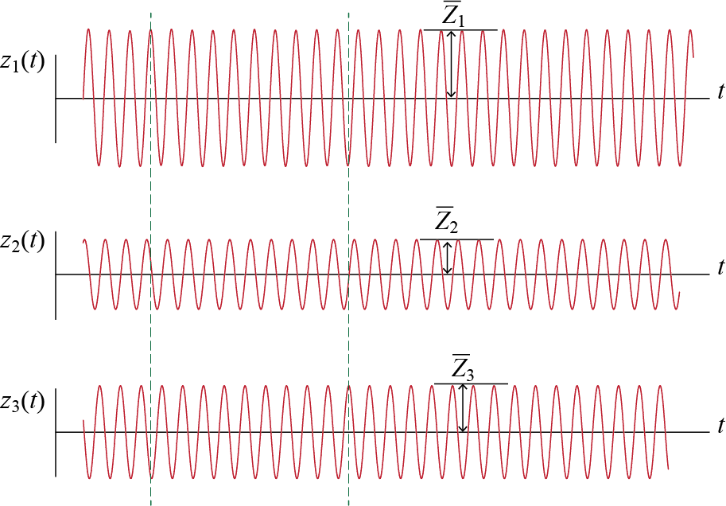
For the problem at hand, the steady state vibrations of the modal coordinates \(\modcor_i\) will have the time histories shown in part in Figure 8.4. If the time histories are known, then straightforward superposition leads to \[ \gc_1 (t) = \eigvecs_{11} \modcor_1 (t) + \eigvecs_{12} \modcor_2 (t) + \eigvecs_{13} \modcor_3 (t) \] and the peak first floor displacement \(\overline{Q}_1\) that is observed during steady state vibrations may be directly identified from the time history of \(\gc_1 (t)\). What if we do not have the time histories but only estimates of the amplitudes of steady state vibrations of modal coordinates, i.e. estimates for \(\overline{\modcoramp}_1\), \(\overline{\modcoramp}_2\) and \(\overline{\modcoramp}_3\) shown in Figure 8.4? Such esimates could be available from a given spectrum, for example in the form of a graph of dynamic amplification, which shows how vibration amplitude varies with the ratio \(\extfreq/\freq\).
Estimating \(\overline{Q}_1\) from \(\overline{\modcoramp}_1\), \(\overline{\modcoramp}_2\) and \(\overline{\modcoramp}_3\) alone is not a trivial issue. The obvious problem is the phase difference. If we look at the time histories we will see that when \(\modcor_1(t)\) reaches a maximum, \(\modcor_2(t)\) is near zero and \(\modcor_3 (t)\) is almost at its minimum. Therefore if we were to superpose the time histories, the sign differences would most likely lead to a peak value less than what we would obtain by superposing the modal peak values, i.e. \[ \overline{Q}_1 \leq \abs{\eigvecs_{11} \overline{\modcoramp}_1} + \abs{\eigvecs_{12} \overline{\modcoramp}_2} + \abs{\eigvecs_{13} \overline{\modcoramp}_3} \] If phase information is not available this may be an option but most likely it is a very conservative estimate. The absolute values are in fact there to ensure that our estimation error does not lead to increased risk of safety; if errors can not be avoided, we should at least make sure that we remain conservative and not give way to any unwarranted concerns.
The estimation issue we have tried to exemplify is generally investigated under the heading modal combination rules. The concise form of the problem is as follows: Assume there is a response quantity \(R (t)\) generated in a system under a certain load, and that its peak value is \(\overline {R}\). The contribution of mode \(i\) to this response quantity is given by \(R^{(i)} (t)\) and its peak value is \(\overline{R^{(i)}}\), with \(i = 1,2,\ldots,n' \leq n\) where \(n'\) is the number of modes that will be included in the analysis; this number may be less that the total number of modes \(n\) if it is known that the contribution of some modes may be neglected. The question is: knowing \(\overline{R^{(i)}}\), how could we produce an estimate of \(\overline{R}\)? There could obviously be many ways of doing this but we will discuss only three of the most commonly used combination rules.
8.2.1 Absolute Sum (ABSSUM)
The most obvious and most conservative way to combine the modal response is to consider the worst case scenario where all modal peaks occur at the same time with the same sign so that \[ \overline{R} \approx \abs{\overline{R^{(1)}}} + \abs{\overline{R^{(2)}}} + \cdots + \abs{\overline{R^{(n')}}} = \sum_i^{n' \leq n} \abs{\overline{R^{(i)}}} \] It is rarely if ever possible that such a complete concurrence occurs and therefore this modal combination is generally considered to be over-conservative.
8.2.2 Square Root of the Sum of Squares (SRSS)
Initially considered as a less conservative combination that favors the larger contributions more, the square root of the sum of squares (SRSS) rule estimates the peak response via \[ \overline{R} \approx \sqrt{\Bigl(\overline{R^{(1)}}\Bigr)^2 + \Bigl(\overline{R^{(2)}}\Bigr)^2 + \cdots + \Bigl(\overline{R^{(n')}}\Bigr)^2} = \biggl(\sum_i^{n' \leq n} \Bigl(\overline{R^{(i)}}\Bigr)^2 \biggr)^{1/2} \] Theoretical justification of the SRSS may be given via random vibration analysis and it has been shown that SRSS works best when modes are well separated; in any case it is not so overly conservative as the ABSSUM. When, however, the majority of the estimate is contributed by close modes, the results are more questionable and the complete quadratic combination rule may be considered as an alternative with a stronger theoretical justification.
8.2.3 Complete Quadratic Combination (CQC)
It may not be possible to specify a single combination rule that would be optimum for all arbitrary inputs but certain types of excitations are conducive for classification. Stationary random excitations are one such set which, although quite idealized, may be used to model certain inputs such as wind and earthquake excitations. Neither of the two are in fact stationary and their probabilistic characteristics are always time dependent; in any case, analysis of response to stationary excitations have provided very useful theoretical frameworks and some practical results that have been employed with satisfactory accuracy. In the analysis of earthquake excitations, for example, considering the ground motion to be a stationary random process have helped tracking how modal response may vary with respect to each other and how this variation affects the response. This investigation have led to the modal combination rule known as the complete quadratic combination which proposes
\[
\overline{R} \approx \biggl(\sum_i^{n' \leq n} \sum_j^{n' \leq n} \ccor{ij}\overline{R^{(i)}} \; \overline{R^{(j)}} \biggr)^{1/2}
\qquad(8.23)\]
Parameter \(\ccor{ij}\), called the correlation coefficient, provides in general a measure of the reciprocal relationship between two random variables, and in this particular case it provides a measure of temporal reciprocity between mode i and mode j. There are different estimates for this coeefficient all of which depend on some measure of separation between the frequencies of the two modes. For example, a frequently cited proposal is1 \[ \ccor{ij} = \ratio{8 \sqrt{\damp_i \damp_j}(\damp_i r_{ij} + \damp_j)r_{ij}^{3/2}}{(1-r_{ij}^2)^2 + 4 \damp_i \damp_j r_{ij} (1+r_{ij}^2)+ 4 (\damp_i^2 + \damp_j^2)r^2_{ij}} \qquad(8.24)\] where \(r_{ij} = \freq_i / \freq_j\). It may be easily shown that \(0 < \ccor{ij} \leq 1\), \(\ccor{ij} = \ccor{ji}\), and \(\ccor{ii} = 1\). In a simpler version, if two modes have the same damping ratios with \(\damp_i = \damp_j = \damp\), then Equation 8.24 reduces to \[ \ccor{ij} = \ratio{8 \damp^2 (1 + r_{ij})r_{ij}^{3/2}}{(1-r_{ij}^2)^2 + 4 \damp^2 r_{ij} (1+r_{ij})^2} \qquad(8.25)\]
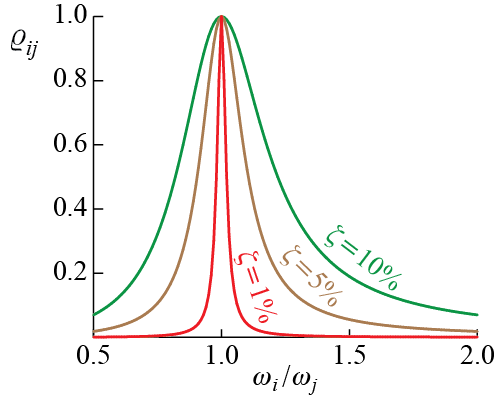
The correlation coefficient depends very much on the separation of the two frequencies and this trend is most readily observed in a simple plot like the one in Figure 8.5 which shows the variation of the correlation coefficient between two modes \(i\) and \(j\) with the ratio of the modal frequencies \(\freq_i / \freq_j\). For simplicity we have assumed both modes to have the same damping ratio \(\damp\) and have provided curves for three different values of modal dmaping ratio. Two things are immediately identified: i. the correlation coefficient steeply decreases from its maximum value of 1 as the separation of the frequencies increases, ii. the correlation coefficient is quite sensitive to damping and the more lightly damped the modes are, the steeper is the decent from the peak value. These observation support the use of SRSS in many application as well. If we note that \(\ccor{ii} = 1\) and write the CQC rule given by Equation 8.23 in the form \[ \overline{R} \approx \biggl(\sum_i^{n' \leq n} \Bigl(\overline{R^{(i)}}\Bigr)^2 + \sum_i^{n' \leq n} \sum_{j \neq i}^{n' \leq n} \ccor{ij}\overline{R^{(i)}} \; \overline{R^{(j)}} \biggr)^{1/2} \qquad(8.26)\] then it is obvious that the first part comprising the single summation is the SRSS rule and the second part comprising the double summation is the additional contribution brought about by the CQC. If the modal frequencies are sufficiently separated then \(\ccor{ij} \approx 0\) and the difference between SRSS and CQC becomes negligible.
E.L. Wilson, A. Der Kiureghian and E.P. Bayo, ``A Replacement for the SRSS Method in Seismic Analysis’’, Earthquake Engineering and Structural Dynamics, Vol. 9, pp. 187-194, 1981.↩︎
8.3 Response to Ground Motion
Extension of the discussions and formulation hereto presented to structures subjected to ground motoions is both trivial and not-so-simple. It is trivial because mathematically the equations of motion for a system subjected to ground motion, as discussed in detail in Section 6.7, are analogous to the equations discussed in the current chapter. For a linear, classically damped system these equations are of the form \[ \mmat \ddgcvec (t) + \cmat \dgcvec (t) + \kmat \gcvec (t) = - \mmat \ininfmat \gaccvec (t) \qquad(8.27)\] as was developed in Section 6.7, with the current addition of the damping term. This equation is identical to Equation 8.1 where \(\ldvec (t) \equiv - \mmat \ininfmat \gaccvec (t)\); in fact, due to this analogy, the term \(- \mmat \ininfmat \gaccvec (t)\) is sometimes referred to as the effective earthquake force. When the system is classically damped, all that we have said about modal analysis is valid and the time history of any response quantity may be determined provided that the input signal \(\gaccvec (t)\) is known. But therein lies the difficulty. The primary example of ground motion is earthquakes, generally governing the design of a structure in earthquake prone areas. As was discussed in the context of SDOF systems, it is impossible to preciely predict what a future earthquake will look like, and therefore the design procedure is often based on a design spectrum that is established from historical analysis of past earthquakes and that hopefully represents the typical earthquake loads that may be expected in the lifetime of a structure considering its location and ground conditions. Use of a spectrum necessitates the use of modal combination rules that were discussed in Section 8.2. Uncertainty in the input is ever present in earthquake resistant design and still the subject of many reasearch effrots.
8.3.1 Modal Response to Ground Motion
To walk through the basic steps involved in analyses and introduce some terminology, let us consider the simple shear building shown in Figure 8.6, subject to a 1-D translational ground motion \(\gdis (t)\). The position of the masses can be defined in response to an inertial frame of reference in absolute terms by \(\adisvec (t)\), or relative to the ground by \(\gcvec (t)\), while the ground itself is displaced by an amount \(\gdis (t)\). As shown in Section 6.7, the absolute and relative displacements of the masses are related through \[ \adisvec (t) = \gcvec (t) + \onecol \gdis (t) \] where \(\onecol\) is the \(1 \times n\) column matrix of ones. Differentiating with respect to time yields \[ \aaccvec (t) = \ddgcvec (t) + \onecol \gacc (t) \] and the equation of motion governing the relative displacements are given by \[ \mmat \ddgcvec (t) + \cmat \dgcvec (t) + \kmat \gcvec (t) = - \mmat \onecol \gacc (t) \qquad(8.28)\]
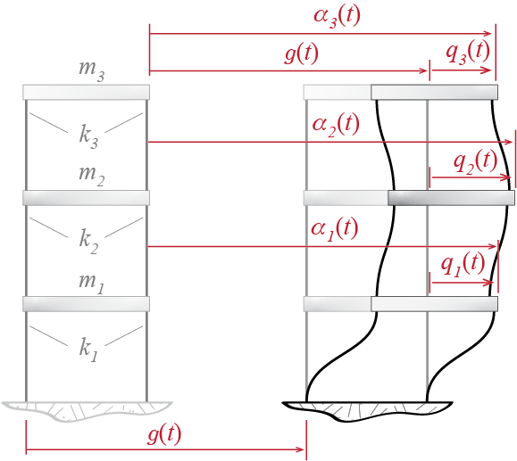
We might recall that this version was generally preferred over the equations regarding the absolute displacements since the relative displacements are more directly associated with deformations; also note that ground motions from earthquakes are often recorded as time-histories of accelerations, typically captured by means of seismometers. It should also be noted that this equation is essentially the same as Equation 8.27 with \(\gaccvec (t) \equiv \gacc (t)\) and \(\ininfmat \equiv \onecol\), with dimension reductions due to the fact that we have a single ground motion component in the current example.
Transforming to modal coordinates with \(\gcvec (t) = \modmat \modcorvec (t)\), equations in modal coordinates are obtained as \[
\ddmodcor_i (t) + 2\damp_i \freq_i \dmodcor_i (t) +\freq_i^2 \modcor_i (t)= - \frac{\excifact_i}{\modm_i} \gacc (t)
\qquad(8.29)\] where the scalar coefficient \(\excifact_i\), referred to as the earthquake excitation factor, is given by \[
\excifact_i = {\teigveci{i}} \mmat \onecol
\qquad(8.30)\] The earthquake excitation factor provides some measure of the extent the ground motion excites a particular mode although it is not the only determinant in the contributio of a mode to the overall response. In any case there is a trend that is relatively easily spotted. Recall that as the mode number increases (in accordance with our convention of ordering modes in increasing order of frequency), the number of sign changes in the mode shape also increases. For an \(n\)-story shear building for which the mass matrix will be diagonal with floor masses \(m_j\), for example, we have
\[
\excifact_i = {\teigveci{i}} \mmat \onecol = \sum_{j}^n \eigvecs_{ij} m_j
\] so that for the first mode we will have all positive terms in the summation but for the second mode onward we will have both positive and negative terms. The earthquake excitation factor therefore tends to decrease with increasing mode number. Furthermore, consider a conjugate SDOF system that has the same frequency and damping ratio as the \(i\)-th mode, subjected to the same ground motion \(\gdis (t)\); this system’s equation of motion will given by \[
\ddot{d}_i (t) + 2 \damp_i \freq_i \dot{d}_i (t)+ \freq^2 d_i (t) = - \gacc (t)
\] where \(d_i (t)\) is the generalized coordinate for the conjugate SDOF system of the \(i\)-th mode. Since the equations of motion are linear, the response of the \(i\)-th mode and the response of the conjugate SDOF system are related through \[
\modcor_i (t) = \frac{\excifact_i}{\modm_i} d_i (t)
\qquad(8.31)\] since, due to linearity, a scaling of the input leads directly to a scaling of the output with the same factor. Consequently, if the peak absolute displacement of the conjugate system is given by \[
\dspec_i = \max_t \abs{d_i (t)}
\] such that \(\dspec_i\) may be calculated or read from a spectrum, then we may estimate the peak modal coordinate response as \[
\overline{\modcoramp_i} = \frac{\excifact_i}{\modm_i} \dspec_i
\] Once the response in modal coordinates is known, the response in physical coordinates may be obtained via modal superposition so that, for example, displacements are given by \[
\gcvec (t) = \modmat \modcorvec (t) = \sum_i \eigveci{i} \frac{\excifact_i}{\modm_i} d_i (t)
\]
8.3.2 Base Shear and Overturning Moment
Base shear \(\baseshear\) and overturning moment \(\overturn\) play such an important role in aseismic design that it is worthwhile to revisit them even though we had previously introduced them in Section 8.1.2. The equivalent static loads for our simple shear building are sketched in Figure 8.7. Recall that these forces are given by \[ \estatvec (t) = \kmat \gcvec (t) \] and that the base shear, which may be obtained for a shear building as the sum of the equivalent static loads, is given by \[ \baseshear (t) = \onecol^T \estatvec (t) = \onecol^T \kmat \gcvec (t) \]
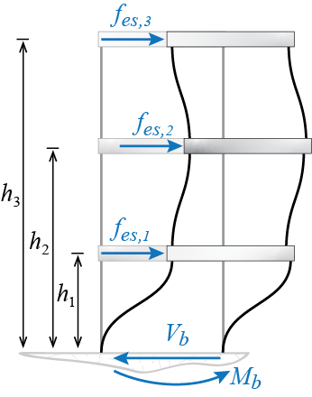
Modal expansion of the physical displacements as \(\gcvec (t) = \modmat \modcorvec (t)\) allows us to express equivalent static loads as \[ \estatvec (t) = \kmat \modmat \modcorvec (t) = \kmat \eigveci{1} \modcor_1 + \kmat \eigveci{2} \modcor_2 + \ldots = \modestatvec{1} + \modestatvec{2} + \ldots \] where, with the use of the conjugate SDOF response and Equation 8.31, \[ \modestatvec{i} (t) = \kmat \eigveci{i} \modcor_i = \kmat \eigveci{i} \frac{\excifact_i}{\modm_i} d_i (t) \] is the equivalent static force that would be associated with the \(i\)-th mode alone. Since \[ \kmat \eigveci{i} = \mmat \eigveci{i}\freq_i^2 \] we may also use \[ \modestatvec{i} (t) = \mmat \eigveci{i} \frac{\excifact_i}{\modm_i} \freq_i^2 d_i (t) \] to calculate the modal equivalent static force for the \(i\)-th mode. Now the base shear may be expressed as \[ \baseshear (t) = \onecol^T \estatvec (t) = \onecol^T \modestatvec{1} + \onecol^T \modestatvec{2} + \ldots = \modbaseshear{1} (t) + \modbaseshear{2} (t) + \ldots \] where \[ \modbaseshear{i} (t) = \onecol^T \modestatvec{i} = \onecol^T \kmat \eigveci{i} \frac{\excifact_i}{\modm_i} d_i (t) = \onecol^T \mmat \eigveci{i} \frac{\excifact_i}{\modm_i} \freq_i^2 d_i (t) \] is the contribution of the \(i\)-th mode to the base shear. Furthermore, since \[ \excifact_i = {\teigveci{i}} \mmat \onecol = \onecol^T \mmat \eigveci{i} \] we have \[ \modbaseshear{i} (t) = \frac{\excifact_i^2}{\modm_i} \freq_i^2 d_i (t) \] which is the simplest expression for modal base shear. The factor \(\excifact_i^2/\modm_i\) is referred to as the effective modal mass. This nomenclature is more mnemonic than physical and it aims to help via resemblance to force being the product of mass (in this context, \(\excifact_i^2/\modm_i\), with units of mass) and acceleration (in this context, \(\freq_i^2 d_i (t)\), with units of acceleration).
In shear buildings, the sum of effective modal masses equals the total mass of the structure; i.e., for an \(n\)-story shear building we will have \[ \sum_i^n \frac{\excifact_i^2}{\modm_i} = \onecol^T \colmat{\ratio{\excifact_1^2}{\modm_1} \\ \ratio{\excifact_2^2}{\modm_2} \\ \vdots \\ \ratio{\excifact_n^2}{\modm_n}} = \onecol^T \mmat \onecol = \sum_i^n m_i \qquad(8.32)\] That this is so may be shown via writing the column matrix of ones as a linear combination of the mode shapes so that \[ \onecol = \modmat \colmat{e_1 \\ e_2 \\ \vdots \\ e_n} = \modmat \nvec{e} \] To find out what the coefficients \(e_i\) should be we can use the orthogonality of the mode shapes whereby we get \[ \teigveci{i} \mmat \onecol = \teigveci{i} \mmat \modmat \colmat{e_1 \\ e_2 \\ \vdots \\ e_n} = \modm_i e_i \] and since \(\teigveci{i} \mmat \onecol = \excifact_i\), we obtain \(e_i = {\excifact_i}/{\modm_i}\) and \[ \nvec{e} = \left\{\frac{\excifact_1}{\modm_1} \;\;\; \frac{\excifact_2}{\modm_2} \;\;\; \cdots \;\;\; \frac{\excifact_n}{\modm_n}\right\}^T \] Therefore we have \[ \sum_i^n m_i = \onecol^T \mmat \onecol = \nvec{e} ^T \modmat^T \mmat \modmat \nvec{e} = \nvec{e} ^T \modmmat \nvec{e} = \sum_i^n \frac{\excifact_i^2}{\modm_i} \] as was the claim. This equality has presented itself as the basis for a commonly used criterion in modal analysis regarding how many modes to include: it is possible to state a normalized target such as to include as many modes as necessary so that effective modal masses represent \(90\%\) (or more or less) of the total mass of the building.
We could proceed along similar lines to develop relationships regarding the overturning moment. Multiplying equivalent static loads with their respective heights leads to \[\begin{align*} \overturn (t) & = \left\{h_1 \;\;\; h_2 \;\;\; \ldots\right\} \colmat{\estati{1} (t) \\ \estati{2} (t) \\ \vdots} = \nvec{h}^T \estatvec (t) \\ & = \nvec{h}^T \modestatvec{1} (t) + \nvec{h}^T \modestatvec{2} (t) + \ldots = \modoverturn{1} (t) + \modoverturn{2} (t) + \ldots \end{align*}\] where \[ \modoverturn{i} (t) = \nvec{h}^T \modestatvec{i} (t) = \nvec{h}^T \mmat \eigveci{i} \frac{\excifact_i}{\modm_i} \freq_i^2 d_i (t) \] is the modal overturning moment for the \(i\)-th mode, i.e. the contribution of the \(i\)-th mode alone to the overturning moment.
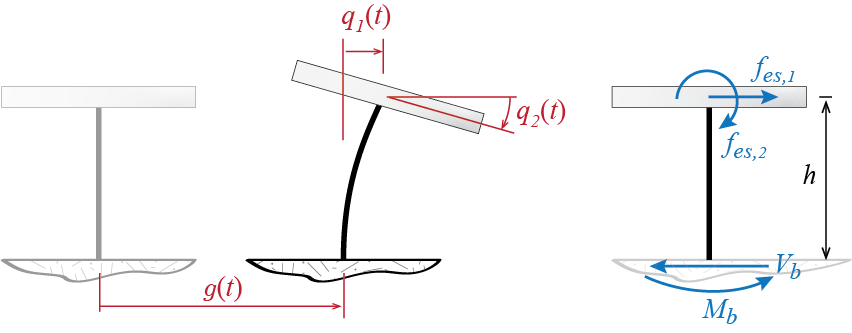
It should be noted that the formulations for base shear and overturning moment developed above have to be modified for arbitrary systems. Obtaining the base shear via the direct sum of all the equivalent static loads is a consequence of their common lateral direction. If rotational or vertical degrees of freedom were present, a direct sum of all equivalent static loads would not be meaningful. Consider as a simple example a heavy rigid bar supported by a single column of negligible mass as shown in Figure 8.8. Even if the bar is assumed axially rigid, the system has two degrees of freedom such that the center of mass may translate laterally and the rigid bar may rotate about its center of mass. The equivalent static loads \(\estatvec = \kmat \gcvec\) in this case would be a lateral force and a moment, also shown in Figure 8.8, and the base shear and overturning moment would be given by \[ \baseshear = \estati{1} \quad \text{and} \quad \overturn = h \estati{1} + \estati{2} \] and it should be clear that these expressions differ from the previously derived ones. On the other hand, in any case, the base shear and the overturning moment will be given by some linear combination of the equivalent static loads. In an effort to generalize the formulations we shall use the notation \(\nvec{b}_{{V}}\) and \(\nvec{b}_{{M}}\) to denote the column matrices comprising the coefficients that multiply the equivalent static loads to obtain the base shear and the overturning moment, respectively, so that in general \[ \baseshear = \nvec{b}_{{V}}^T \estatvec \quad \text{and} \quad \overturn = \nvec{b}_{{M}}^T \estatvec \] In the case of a shear building we will have \(\nvec{b}_{{V}} = \onecol\) and \(\nvec{b}_{{M}} = \nvec{h}\), whereas for example in the case of the column supported slab of Figure 8.8 we will have \[ \nvec{b}_{{V}} = \colmat{1 \\ 0} \; ; \nvec{b}_{{M}} = \colmat{h \\ 1} \]
8.3.3 Spectral Analysis and Modal Combination
When the time history of base excitation is known, the modal analysis approach hereto detailed allows us to derive the time history of any response quantity. In earthquake analyses, however, the ground motion is more often than not unknown. The concepts of response and design spectra were introduced previously in Chapter 5. Here we will try to discuss how the use of such spectra may help in analysis of MDOF systems.
To remind ourselves the basic terminology and notation, assume that a spectrum for some ground motion \(\gdis (t)\) is available. Such a spectrum would give the variation(s) of peak response(s) for a SDOF system governed by \[ \ddot{d} (t) + 2 \damp \freq \dot{d} (t) + \freq^2 d (t) = - \gacc (t) \] The displacement spectrum \(\dspec = \dspec (\period,\damp)\) would show the variation of the maximum absolute relative displacement (deformation), defined by \[ \dspec = \max_t \abs{d (t)} \] as the period of the system varies for different values of damping ratio. The pseudo-velocity \(\vspec\) and the pseudo-acceleration \(\aspec\) are defined through \[ \freq \dspec = \vspec = \ratio{\aspec}{\freq} \] so that knowing one, the other two may be easily calculated.
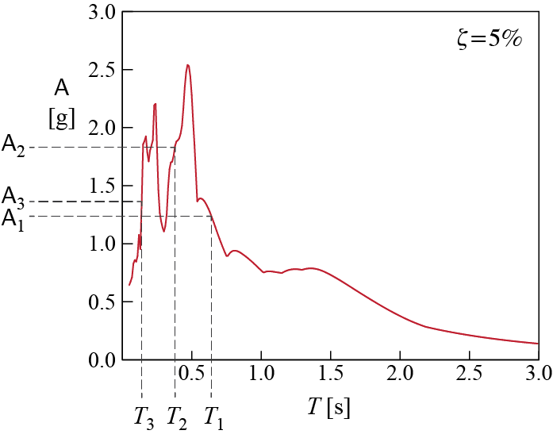
Say that we have the pseudo-acceleration spectrum \(\aspec\) for a specific value of the damping ratio, as shown in Figure 8.9. For simplicity assume all modes have the same damping ratio with \(\damp = 0.05\) so that this single spectrum is sufficient for the system we are investigating. Our 3-DOF system of Figure 8.6 will have three periods, say \(\period_1\), \(\period_2\) and \(\period_3\), corresponding to three frequencies \(\freq_1\), \(\freq_2\) and \(\freq_3\), respectively. Each period is associated with a modal equation in the form \[ \ddmodcor (t) + 2 \damp_i \freq_i \dmodcor (t) + \freq_i^2 \modcor (t) = -\ratio{\excifact_i}{\modm_i} \gacc (t) \] and for each period, the corresponding pseudo-acceleration value will be read from the spectrum as \(\aspec_1\), \(\aspec_2\) and \(\aspec_3\). With these values, the peak modal coordinate responses will be estimated by \[ \overline{\modcoramp_1} = \ratio{\excifact_1}{\modm_1} \ratio{\aspec_1}{\freq_1^2} , \quad \overline{\modcoramp_2} = \ratio{\excifact_2}{\modm_2} \ratio{\aspec_2}{\freq_2^2}, \quad \overline{\modcoramp_3} = \ratio{\excifact_3}{\modm_3} \ratio{\aspec_3}{\freq_3^2} \] Now we have to make a choice: how do we want to combine the modal responses to estimate a specific response quantity? Assume we would like to estimate the maximum deformation suffered by the third story, i.e. the interstory drift between floors 2 and 3. The quantity we are trying to estimate is the peak value of \[ \Delta_{23} (t)= \gc_3 (t) - \gc_2 (t) = \left[\sum_i \eigvecs_{3i} \modcor_i (t) \right] - \left[\sum_i \eigvecs_{2i} \modcor_i (t) \right] \] where, to remind ourselves, \(\eigvecs_{ji}\) denotes the component of the \(i\)-th mode along the \(j\)-th generalized coordinate. We first have to figure out the contribution of each mode to the interstory drift. Modal expansion of the displacements lead to \[ \Delta_{23} (t) = (\eigvecs_{31} - \eigvecs_{21}) \modcor_1 (t) + (\eigvecs_{32} - \eigvecs_{22}) \modcor_2 (t) + (\eigvecs_{33} - \eigvecs_{23}) \modcor_3 (t) \] The contributions of each of the modes to the interstory drift \(\Delta_{23}\) are therefore given by \[ \Delta_{23}^{(1)} = (\eigvecs_{31} - \eigvecs_{21}) \modcor_1, \quad \Delta_{23}^{(2)} = (\eigvecs_{32} - \eigvecs_{22}) \modcor_2, \quad \Delta_{23}^{(3)} = (\eigvecs_{33} - \eigvecs_{23}) \modcor_3 \] The peak values for each of the modal contributions are then given by \[\begin{align*} \overline{\Delta_{23}^{(1)}} & = (\eigvecs_{31} - \eigvecs_{21}) \overline{\modcoramp_1} = (\eigvecs_{31} - \eigvecs_{21}) \ratio{\excifact_1}{\modm_1} \ratio{\aspec_1}{\freq_1^2} \\ \overline{\Delta_{23}^{(2)}} & = (\eigvecs_{32} - \eigvecs_{22}) \overline{\modcoramp_2} = (\eigvecs_{32} - \eigvecs_{22}) \ratio{\excifact_2}{\modm_2} \ratio{\aspec_2}{\freq_2^2} \\ \overline{\Delta_{23}^{(3)}} & = (\eigvecs_{33} - \eigvecs_{23}) \overline{\modcoramp_3} = (\eigvecs_{33} - \eigvecs_{23}) \ratio{\excifact_3}{\modm_3} \ratio{\aspec_3}{\freq_3^2} \end{align*}\] where we note that the peak modal interstory drifts \(\overline{\Delta_{23}^{(i)}}\) may be positive or negative valued. Next step is to pick the method with which we would like to combine these peak values. If, for example, we would like to use the SRSS approach we have: \[ \overline{\Delta_{23}} = \sqrt{\biggl(\overline{\Delta_{23}^{(1)}}\biggr)^2 + \biggl(\overline{\Delta_{23}^{(2)}}\biggr)^2 + \biggl(\overline{\Delta_{23}^{(3)}}\biggr)^2} \]
EXAMPLE 8 .3
A three-story shear building model has story stiffnesses and masses as shown in Figure 8.10 with \(m = 100 \unit{kg}\), and \(k = 9870 \unit{N/m}\). System is assumed to be classically damped with all modes having a damping ratio of \(\damp = 5\%\). The ground motion \(\gacc (t)\) this structure will be subjected to is defined by the spectrum also shown in Figure 8.10, scaled for a peak ground acceleration (PGA) of 0.5 g. We want to find, using the SRSS combination rule, (i) an estimate for the maximum top displacement, (ii) an estimate for the maximum deformation in the second story columns, (iii) an estimate for maximum base shear.
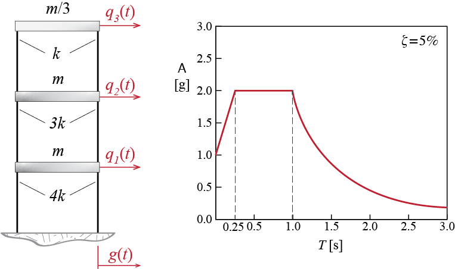
- Find the natural modes of vibration for this structure, as well as the modal masses and stiffnesses:
In order to find the vibration modes, we will need to determine the mass and stiffness matrices and then solve the eigenvalue problem. The mass matrix \(\mmat\) is given by \[
\mmat = 100 \begin{bmatrix}
1 & 0 & 0\\
0 & 1 & 0\\
0 & 0 & 1/3
\end{bmatrix} \unit{kg}
\] and the stiffness matrix \(\kmat\) by \[
\kmat= 9870 \left[ \begin{array}{rrr}
7 & -3 & 0 \\
-3 & 4 & -1 \\
0 & -1 & 1
\end{array} \right] \unit{N/m}
\] The eigenvalue problem we have to solve to find the natural frequencies and mode shapes is \[
[\kmat-\freq_i^2 \mmat] {\eigvec}_{i} = 0
\] which yields
\[\begin{align*}
\freq_1 & = \pi \sqrt{10} \unit{rad/s}, \quad \period _1 = 0.63 \unit{s} \\
\freq_2 & = 2 \pi \sqrt{10} \unit{rad/s}, \quad \period _2 = 0.32 \unit{ s}\\
\freq_3 & = 3\pi \sqrt{10} \unit{rad/s}, \quad \period _3 = 0.21 \unit{ s}
\end{align*}\] with mode shapes given in Table 8.1 and illustrated in Figure 8.11. These mode shapes are scaled so that their largest (in absolute value) componenent is equal to unity. Table 8.1 also includes the modal mass and stiffness values calculated with these mode shapes.
| \(i\) | \(\freq_i\) \([\punit{rad/s}]\) | \(\period_i\) \([\punit{s}]\) | \(\eigvecs_{1i}\) | \(\eigvecs_{2i}\) | \(\eigvecs_{3i}\) | modal mass \([\punit{kg}]\) | modal stiffness \([\punit{N / m}]\) |
|---|---|---|---|---|---|---|---|
| 1 | \(\pi \sqrt{10}\) | 0.63 | 0.33 | 0.67 | 1.00 | 88.89 | 8773.33 |
| 2 | \(2\pi \sqrt{10}\) | 0.32 | -0.33 | -0.33 | 1.00 | 55.56 | 21933.33 |
| 3 | \(3\pi \sqrt{10}\) | 0.21 | 1.00 | -0.67 | 0.33 | 148.15 | 131600.00 |
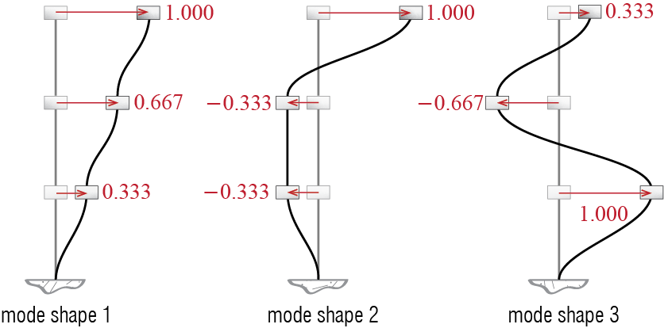
- Determine the peak modal responses:
For the three periods of our system, the spectral accelerations we read from the spectrum of Figure 8.10 scaled to \(0.5\gravity\) peak ground acceleration are
\[\begin{align*}
0.25 \unit{s} < \period_1 = 0.63 \unit{s} \leq 1 \unit{s} \;\;\; \quad & \rightarrow \quad \aspec_1 = \left(\ratio{0.5 \gravity}{1 \gravity} \right) \left(2 \gravity \right) = 1 \gravity \\
0.25 \unit{s} < \period_2 = 0.32 \unit{s} \leq 1 \unit{s} \;\;\; \quad & \rightarrow \quad \aspec_2 = \left(\ratio{0.5 \gravity}{1 \gravity} \right) \left(2 \gravity \right) = 1 \gravity \\
\period_3 = 0.21 \unit{s} \leq 0.25 \unit{s} \;\;\; \quad & \rightarrow \quad \aspec_3 = \left(\ratio{0.5 \gravity}{1 \gravity} \right) \left(1 \gravity + \ratio{2 \gravity - 1 \gravity}{0.25 \unit{s}} 0.21 \unit{s} \right) = 0.92 \gravity
\end{align*}\] whence the spectral displacements are calculated as: \[
\dspec_1 = \ratio{\aspec_1}{\freq_1^2} = 0.0994 \unit{m}, \quad \dspec_2 = \ratio{\aspec_2}{\freq_2^2} = 0.0248 \unit{m}, \quad \dspec_3 = \ratio{\aspec_3}{\freq_3^2} = 0.0102 \unit{m}
\]
The earthquake excitation factors are given by \[ \excifact_1 = \teigveci{1} \mmat \onecol = 133.33 \unit{kg}, \quad \excifact_2 = \teigveci{2} \mmat \onecol = -33.33 \unit{kg}, \quad \excifact_3 = \teigveci{3} \mmat \onecol = 44.44 \unit{kg} \] so that the peak modal coordinate responses are calculated as \[ \overline{\modcoramp_1} = \frac{\excifact_1}{\modm_1} \dspec_1 = 0.1491 \unit{m}, \quad \overline{\modcoramp_2} = \frac{\excifact_2}{\modm_2} \dspec_2 = -0.0149 \unit{m}, \quad \overline{\modcoramp_3} = \frac{\excifact_3}{\modm_3} \dspec_3 = 0.0030 \unit{m} \]
- Determine the estimates for the maximum responses:
The maximum top displacement is the maximum relative (to the ground) displacement of the third floor (i.e. the floor at the top). The time history of this displacement is given by \[ \gc_3 (t) = \eigvecs_{31} \modcor_1 (t) + \eigvecs_{32} \modcor_2 (t) + \eigvecs_{33} \modcor_3 (t) \] so that the peak modal top displacements are given by \[ \overline{\gc_3^{(1)}} = \eigvecs_{31} \overline{\modcoramp_1} = 0.1491 \unit{m}, \quad \overline{\gc_3^{(2)}} = \eigvecs_{32} \overline{\modcoramp_2} = -0.0149 \unit{m}, \quad \overline{\gc_3^{(3)}} = \eigvecs_{33} \overline{\modcoramp_3} = 0.0010 \unit{m} \] and the estimate we calculate via the SRSS rule for the maximum top displacement is: \[ \overline{\gc_3} = \sqrt{\left(\overline{\gc_3^{(1)}}\right)^2 + \left(\overline{\gc_3^{(2)}}\right)^2 + \left(\overline{\gc_3^{(3)}}\right)^2} = 0.1498 \unit{m} \] Note that this estimate is very close to the estimate we would obtain using only mode 1, and the error we would make by not including mode 3 is completely negligible.
The maximum deformation of the second story columns is governed by the interstory drift that occurs between the first and second floors. This interstory drift is given by \[ \Delta_{12} = (\eigvecs_{21} - \eigvecs_{11}) \modcor_1 (t) + (\eigvecs_{22} - \eigvecs_{12}) \modcor_2 + (\eigvecs_{23} - \eigvecs_{13}) \modcor_3 (t) \] so that peak modal interstory drifts are calculated as \[\begin{align*} \overline{\Delta_{12}^{(1)}} & = (\eigvecs_{21} - \eigvecs_{11}) \overline{\modcoramp_1} = 0.0497 \unit{m} \\ \overline{\Delta_{12}^{(2)}} & = (\eigvecs_{22} - \eigvecs_{12}) \overline{\modcoramp_2} = 0 \unit{m} \\ \overline{\Delta_{12}^{(3)}} & = (\eigvecs_{23} - \eigvecs_{13}) \overline{\modcoramp_3} = - 0.0051 \unit{m} \end{align*}\] and the SRSS estimate for the maximum interstory drift is given by: \[ \overline{\Delta_{12}} = \sqrt{\left(\overline{\Delta_{12}^{(1)}}\right)^2 + \left(\overline{\Delta_{12}^{(2)}}\right)^2 + \left(\overline{\Delta_{12}^{(3)}}\right)^2} = 0.050 \unit{m} \]
The base shear is calculated via \[ \baseshear (t) = \onecol^T \estatvec (t) = \onecol^T \modestatvec{1} + \onecol^T \modestatvec{2} + + \onecol^T \modestatvec{3} = \modbaseshear{1} (t) + \modbaseshear{2} (t) + \modbaseshear{3} (t) \] and we showed previously that for shear building systems the peak modal base shears may be calculated as \[ \overline{\modbaseshear{i}} = \frac{\excifact_i^2}{\modm_i} \freq_i^2 \dspec_i = \frac{\excifact_i^2}{\modm_i} \aspec_i \] so that \[ \overline{\modbaseshear{1}} = \frac{\excifact_1^2}{\modm_1} \aspec_1 = 1962 \unit{N}, \quad \overline{\modbaseshear{2}} = \frac{\excifact_2^2}{\modm_2} \aspec_2 = 196.2 \unit{N}, \quad \overline{\modbaseshear{3}} = \frac{\excifact_3^2}{\modm_3} \aspec_3 = 120.3 \unit{N} \] The SRSS estimate for the maximum base shear is therefore given by \[ \overline{\baseshear} = \sqrt{\left(\overline{\modbaseshear{1}}\right)^2 + \left(\overline{\modbaseshear{2}}\right)^2 + \left(\overline{\modbaseshear{3}}\right)^2} = 1975.5 \unit{N} = 0.86 W \] where \(W\) is the total weight of the structure.